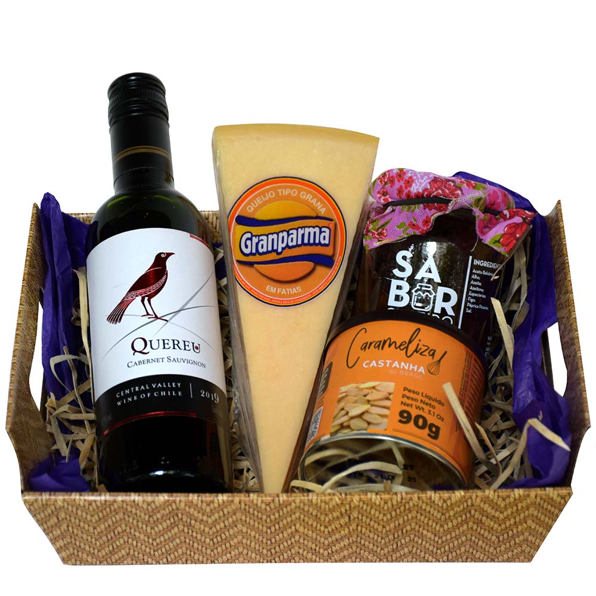
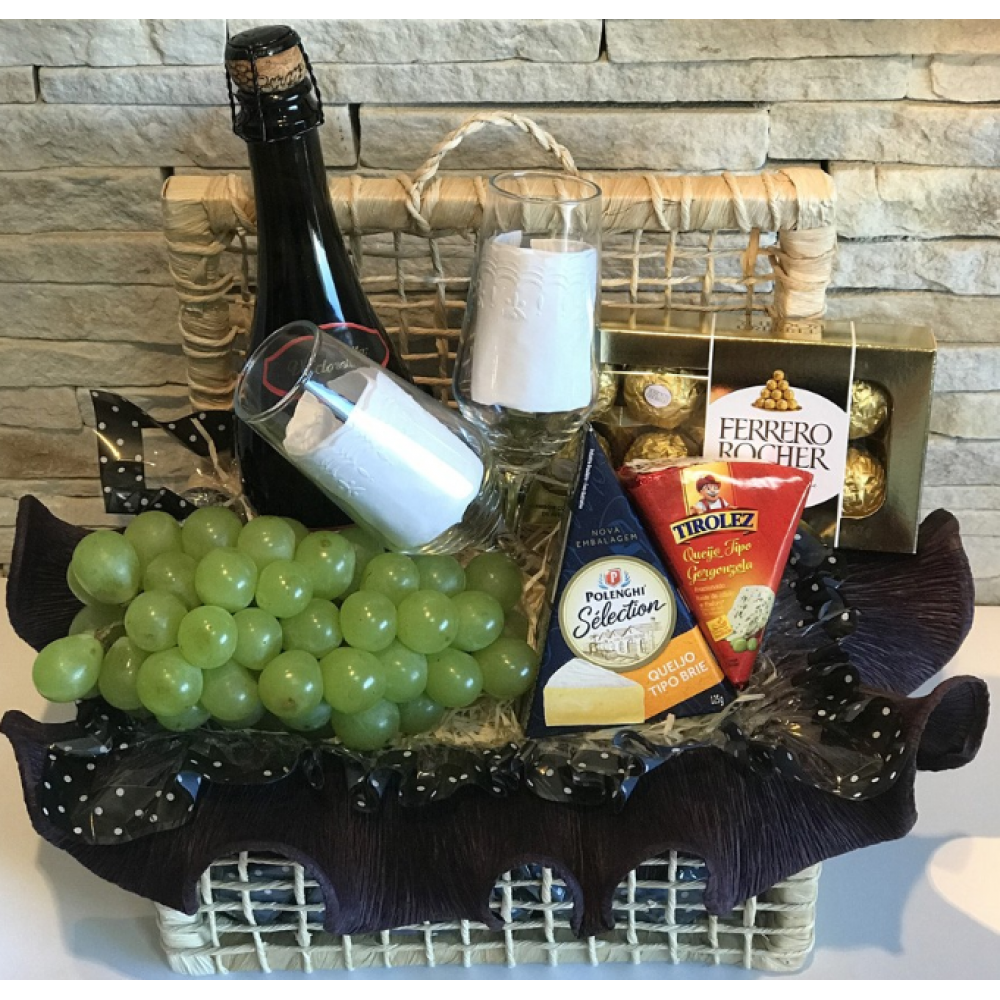
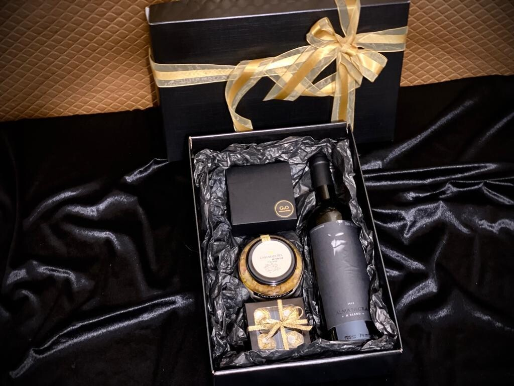

Cestas de vinho são presentes populares para amantes de vinho ou para ocasiões especiais, como aniversários, casamentos e feriados.
Elas geralmente incluem uma ou mais garrafas de vinho, bem como complementos como queijos, chocolates, frutas secas ou outros petiscos que combinem bem com o vinho.
Cesta de Vinho tinto
Vem com uma bela garrafa de um vinho tinto chileno encorpado.
Acompanha um excelente queijo que combina perfeitamente com o vinho e castanhas para acrescentar ainda mais ao sabor.

Cesta com espumante
O espumante é um clássico para a celebração de momentos especiais.
Acompanha doces, frutas frescase e queijos capazes de tornar qualquer celebração ainda mais especial.

Cesta Premium
A cesta premium é a ideal para aquela pessoa ou ocasião diferenciada.
Contando com um vinho de excelente sabor, Alma Negra, torradinhas finas em caixinha decorada, Antepasto Italiano Gourmet e bombons finos Ferrero Rocher, tudo apresentado na caixa premium decorada by G&O.
